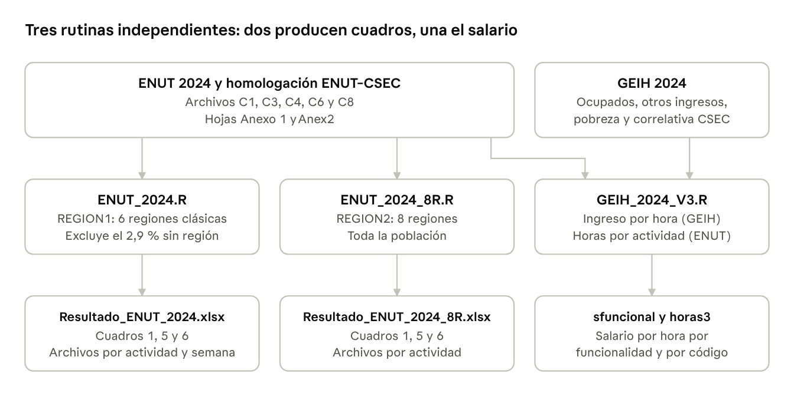

1. Presentación
Este documento describe cómo tres rutinas en R miden y valoran el trabajo doméstico y de cuidado no remunerado (TDCNR) de 2024 para la Cuenta Satélite de Economía del Cuidado (CSEC). Dos rutinas producen los cuadros de tiempo con la Encuesta Nacional de Uso del Tiempo (ENUT) 2024. La tercera estima con la Gran Encuesta Integrada de Hogares (GEIH) 2024 el salario por hora que se asigna a cada funcionalidad del TDCNR.
| Rutina | Fuente | Qué produce | Cobertura regional |
|---|---|---|---|
ENUT_2024.R | ENUT 2024 | Cuadros 1, 5 y 6 de horas y participación en TDCNR, y archivos de apoyo | Las 6 regiones clásicas: Caribe, Central, Oriental, Pacífica, Bogotá y San Andrés |
ENUT_2024_8R.R | ENUT 2024 | Los mismos cuadros | 8 regiones: las 6 clásicas más Orinoquía y Amazonía |
GEIH_2024_V3.R | GEIH 2024 y ENUT 2024 | Ingreso laboral por hora por código CSEC y salario promedio por funcionalidad | Nacional |
La diferencia entre las dos rutinas ENUT es de cobertura, no de método. ENUT_2024.R conserva el subconjunto clásico de regiones, comparable con la serie anterior. ENUT_2024_8R.R incorpora toda la población de la encuesta y publica dos regiones adicionales.
Las rutinas no dependen de rutas de un equipo en particular: leen sus insumos desde la carpeta RUTA_DANE, que contiene ENUT/, GEIH/ y Pobreza/ (Anexo A).

Las dos rutinas ENUT comparten insumos y método; solo cambia la variable de región. GEIH_2024_V3.R calcula por su cuenta las horas de la ENUT que necesita, por lo que ninguna rutina depende de otra.
2. Objetivos y alcance
2.1 Objetivo general
Cuantificar el tiempo que la población dedica al TDCNR en 2024, por funcionalidad CSEC, y asignarle un precio por hora a partir del mercado laboral, para su valoración en la CSEC.
2.2 Objetivos específicos
Clasificar las preguntas de actividades de la ENUT 2024 en las seis funcionalidades de la CSEC.
Estimar las horas anuales de TDCNR por funcionalidad y sexo, con desagregaciones sociodemográficas y territoriales (Cuadro 1).
Estimar el tiempo semanal promedio por participante y la razón mujer/hombre (Cuadro 5).
Estimar la tasa de participación de la población de 10 años y más en cada funcionalidad (Cuadro 6).
Estimar el ingreso laboral por hora de las ocupaciones equivalentes a cada actividad, con la GEIH 2024.
Obtener el salario promedio por hora de cada funcionalidad, ponderado por las horas dedicadas a cada actividad.
2.3 Alcance
Población: el módulo de uso del tiempo trae a todas las personas del hogar (desde 0 años). El Cuadro 6 se limita a 10 años y más; los cuadros 1 y 5 no aplican filtro de edad y suman a quien reporta tiempo.
Periodo: año 2024. Las horas diarias se llevan a semanas (× 7) y a año (× 7 × 52).
Cobertura geográfica: nacional, con dos variantes regionales (sección 6).
Unidad de análisis: la persona; el tipo de hogar y la etapa del ciclo familiar se construyen en el hogar y se asignan a cada miembro.
3. Fuentes de información e insumos
Las rutinas usan dos encuestas de hogares del DANE y cinco tablas auxiliares de clasificación y referencia. Las rutas de esta sección son relativas a la carpeta RUTA_DANE (Anexo A).
3.1 ENUT 2024
Archivos CSV separados por punto y coma en ENUT/Raw/ENUT_2024_CSV/. Las rutinas ENUT los leen por su posición en la lista ordenada de archivos; GEIH_2024_V3.R los lee por nombre.
| Archivo | Contenido usado | Objeto en R | Variables principales |
|---|---|---|---|
C1.csv | Vivienda | geo | CLASE, REGION1, REGION2, P4030S1A1 (estrato), FEX_C |
C3.csv | Características de las personas | demo | P6020 (sexo), P6040 (edad), P425 (parentesco), P1173 (autorreconocimiento étnico), P1173_1 (campesino) |
C4.csv | Salud | salud | P1169* (dificultades para actividades diarias) |
C6.csv | Educación | educ | P6210, P1158 (nivel educativo) |
C8.csv | Uso del tiempo (184.902 personas, 425 columnas) | uso_tiempo | Preguntas de actividades P####S#A# y FEX_C |
Las llaves de cruce son DIRECTORIO (vivienda) y DIRECTORIO, SECUENCIA_P, ORDEN (persona).
3.2 GEIH 2024
| Archivo | Ubicación | Uso |
|---|---|---|
Ocupados.CSV (12 meses) | GEIH/2024/ | Ingresos laborales, horas trabajadas, posición ocupacional P6430, factor FEX_C18 |
Otros ingresos e impuestos.CSV (12 meses) | GEIH/2024/ | Complementa los ingresos de los ocupados |
Pobreza2024.csv | Pobreza/ | Ingresos imputados (IMPA, IMPAES) e ingreso en especie (IEES) |
3.3 Tablas auxiliares
| Tabla | Archivo | Uso |
|---|---|---|
Homologación ENUT–CSEC, hoja Anexo 1 | ENUT/Anex/Homologación ENUT-CSEC.xlsx | Asigna 40 preguntas de la ENUT a las funcionalidades 1 a 6 |
Homologación ENUT–CSEC, hoja Anex2 | Mismo archivo | Asigna a cada una de 50 actividades un código CSEC de ocupación (COD_CSEC) y su tipo de valoración (Tipo) |
| Correlativa ocupado–CSEC | ENUT/Raw/Otros/CSEC_Correlativa_2024_26062026.xlsx | Asigna a cada ocupado de la GEIH su código CSEC (CCSEC_1) |
| Rama y oficio | ENUT/Raw/Otros/identif_rama_oficio_nal_2024_v2.xlsx | Agrega P6370, P6380, P6390 a cada ocupado |
| Base de referencia 2021 | ENUT/Raw/Otros/Base2021.xlsx | Salario por hora de 2021 por código CSEC (DEV), para comparar |
Las rutinas ENUT escriben sobre plantillas de cuadros ya existentes: ENUT/Output/Resultado_ENUT_2024.xlsx y ENUT/Output/Resultado_ENUT_2024_8R.xlsx.
4. Marco conceptual
4.1 TDCNR y funcionalidades CSEC
El TDCNR comprende las actividades domésticas y de cuidado que las personas hacen sin pago para su hogar, otros hogares o la comunidad. La CSEC las agrupa en seis funcionalidades, y cada pregunta de actividades de la ENUT se asigna a una de ellas.
| Código | Funcionalidad CSEC | Preguntas ENUT (Anexo 1) | Ejemplo de actividad |
|---|---|---|---|
| 1 | Suministro de alimentos | 3 | Preparar y/o servir alimentos para las personas del hogar |
| 2 | Mantenimiento de vestuario | 3 | Lavar, planchar o guardar ropa |
| 3 | Limpieza, mantenimiento y reparación para el hogar | 8 | Limpiar la vivienda |
| 4 | Compras y administración del hogar | 7 | Comprar artículos personales o para el hogar; pagar facturas y hacer trámites |
| 5 | Cuidado y apoyo de personas del hogar | 11 | Acompañar a citas médicas a personas del hogar |
| 6 | Voluntariado | 8 | Trabajos en beneficio del barrio o la comunidad |
4.2 Estructura de las preguntas de la ENUT
Cada variable de tiempo sigue el patrón P + pregunta + S + opción + A + ítem; por ejemplo, P1143S1A1. Para cada actividad la ENUT registra horas (ítem 1) y minutos (ítem 2) dedicados el día de referencia.
La rutina conserva los ítems 1 y 2 de cada actividad.
En
P1140yP1131conserva los ítems 1 a 4.Las variables que terminan en 2 o 4 se tratan como minutos y se dividen por 60.
4.3 Procedimiento de homologación
La rutina separa cada nombre de columna en pregunta, opción e ítem, y cruza la clave pregunta + S + opción con el código de la hoja Anexo 1. Cinco códigos de la homologación son preguntas completas, sin opción (P1131 a P1135, cuidado de personas del hogar). Esos se cruzan por la pregunta, y todas sus opciones pasan a la funcionalidad 5. El resultado es la tabla df, que lista para cada funcionalidad (act_CSEC) las columnas de la ENUT que la componen (cod2).
El tiempo diario de la persona i en la funcionalidad f es la suma de esas columnas, ya en horas:
donde K_f es el conjunto de actividades asignadas a la funcionalidad f. Los valores en cero se tratan como faltantes antes de sumar, de modo que no alteran la suma.
5. Procesamiento de la ENUT 2024 (ENUT_2024.R)
ENUT_2024.R produce los cuadros 1, 5 y 6 para el total nacional y las 6 regiones clásicas. Sigue cuatro etapas: lectura y unión de bases, construcción de variables de desagregación, cálculo de indicadores y exportación.
5.1 Lectura y unión de bases
Lee los diez archivos de
ENUT_2024_CSVy pasa los nombres de columna a mayúsculas.Construye la tabla de homologación
df(sección 4.3).Une al módulo de uso del tiempo (C8), por persona, las variables de educación (C6), discapacidad (C4) y características de la persona y el hogar (C3).
Une por
DIRECTORIOlas variables de vivienda (C1): clase, región, estrato y factor de expansión.Excluye a las personas sin
REGION1(29.006 personas, 1,55 millones expandidas, el 2,9 % de la población).
Como C8 y C1 traen una columna FEX_C cada una, R crea FEX_C.x (la de C8) y FEX_C.y (la de C1). Los cálculos usan FEX_C.y. Se verificó que ambos factores coinciden en las 184.902 personas, y también con el de C3; la elección no altera los resultados.
5.2 Variables de desagregación
Todas las desagregaciones se cruzan con el sexo (P6020: 1 hombre, 2 mujer).
| Desagregación | Variable en R | Fuente | Categorías |
|---|---|---|---|
| Dominio geográfico | CLASE | C1 | 1 Cabeceras municipales; 2 Centros poblados y rural disperso |
| Región | REGION (= REGION1) | C1 | Caribe, Central, Oriental, Pacífica, Bogotá, San Andrés |
| Tipo de hogar | thogar | C3, P425 | 8 tipos (tabla 5.2.1) |
| Nivel educativo | educa | C6, P6210; si falta, P1158 | Ninguno y preescolar; Primaria; Secundaria–Media; Superior y posgrado |
| Rangos de edad | Redad | C3, P6040 | 10–14, 15–17, 18–29, 30–39, 40–49, 50–59, 60–75 y más de 75 años |
| Etapa del ciclo familiar | etapa | C3 | 7 etapas, solo hogares con jefe y pareja (tabla 5.2.2) |
| Estrato socioeconómico | estrato | C1, P4030S1A1 | Estratos 1 y 2; 3 y 4; 5 y 6; sin información |
| Autorreconocimiento étnico | P1173 | C3 | 6 categorías de la pregunta |
| Discapacidad | discapacidad | C4, P1169* | 1 si alguna respuesta es 1 o 2 |
El nivel educativo se clasifica así: con P6210, códigos 1–2 ninguno y preescolar, 3 primaria, 4–5 secundaria–media y 6–12 superior; con P1158, códigos 1, 2, 3 y 4–9, en el mismo orden.
Tabla 5.2.1. Tipo de hogar. Se construye con el parentesco P425 respecto al jefe: 1 jefe, 2 pareja, 3 hijo, 4 a 9 otros parientes, 10 a 14 no parientes.
| Tipo de hogar | Regla |
|---|---|
| 1. Unipersonal (hombre) / 2. Unipersonal (mujer) | Una sola persona; según el sexo del jefe |
| 3. Nuclear sin hijos | Jefe y pareja, sin hijos, sin otros parientes ni no parientes |
| 4. Nuclear con hijos | Jefe, pareja e hijos, sin otros parientes ni no parientes |
| 5. Monoparental (hombre) / 6. Monoparental (mujer) | Jefe e hijos, sin pareja, sin otros parientes ni no parientes; según el sexo del jefe |
| 7. Extenso | Con otros parientes y sin no parientes |
| 8. Compuesto | Con al menos un no pariente |
Tabla 5.2.2. Etapa del ciclo familiar. Solo aplica a hogares con jefe y pareja. La edad de la mujer es la de la jefa o pareja mujer; si hay dos, la menor; si no hay, la menor edad entre jefe y pareja.
| Etapa | Regla |
|---|---|
| 1. Pareja joven sin hijos | Sin hijos y mujer de 40 años o menos |
| 2. Etapa inicial | Hijo mayor de 5 años o menos |
| 3. Etapa de expansión | Hijo mayor de 6 a 12 años |
| 4. Etapa de consolidación (a) | Hijo mayor de 13 a 18 años |
| 5. Etapa de consolidación (b) | Hijo mayor de más de 18 años e hijo menor de 18 o menos |
| 6. Etapa de salida | Todos los hijos mayores de 18 años |
| 7. Pareja mayor sin hijos | Sin hijos y mujer mayor de 40 años |
5.3 Indicadores
Sea h el tiempo diario de la persona en la funcionalidad (sección 4.3), w su factor de expansión y G un grupo de la desagregación para un sexo dado.
Cuadro 1. Horas anuales de TDCNR, en miles de horas (función csec):
Cuadro 5. Tiempo semanal promedio por participante, en horas (función csec_h). Participa quien reporta tiempo positivo en la funcionalidad:
La razón M/H es el promedio de las mujeres dividido por el de los hombres del mismo grupo.
Cuadro 6. Tasa de participación, en porcentaje (función csec_people), sobre la población de 10 años y más:
Los cuadros 5 y 6 incluyen un séptimo bloque, Total TDCNR, que suma en h todas las actividades de las seis funcionalidades (parámetro w = 1). El Cuadro 1 publica solo las seis funcionalidades.
Horas por pregunta (función csec_q). Para cada actividad de la ENUT, sin sumar entre actividades, calcula la suma ponderada del tiempo por sexo. En ENUT_2024.R el resultado queda en horas diarias expandidas, sin llevar a año.
5.4 Exportación
La rutina escribe los valores en la plantilla Output/Resultado_ENUT_2024.xlsx, en posiciones fijas. Cada funcionalidad ocupa un bloque de columnas (Hombres, Mujeres y Total o M/H); cada desagregación empieza en una fila predefinida. Antes de escribir, ordena las filas del tipo de hogar y de etnia para que coincidan con la plantilla aunque falte alguna categoría.
6. Variante de 8 regiones (ENUT_2024_8R.R)
ENUT_2024_8R.R aplica el mismo método que ENUT_2024.R, pero sobre toda la población de la encuesta y con 8 regiones en lugar de 6. Agrega las regiones Orinoquía y Amazonía, y por eso sus totales nacionales son mayores.
6.1 Diferencia en la cobertura regional
La ENUT 2024 trae dos clasificaciones regionales en la base de vivienda (C1):
REGION1, regionalización clásica. Seis regiones. Deja sin región a 29.006 personas de departamentos que esa clasificación no cubre;ENUT_2024.Rlas excluye.REGION2, regionalización ampliada. Ocho regiones, sin valores faltantes. Separa el Meta de la región Oriental y el Caquetá de la Central, y los agrupa con los departamentos que no tenían región.
| Región | Código REGION1 | Código REGION2 | Población en ENUT_2024.R (millones) | Población en ENUT_2024_8R.R (millones) | Cambio |
|---|---|---|---|---|---|
| Caribe | 1 | 1 | 11,99 | 11,99 | Igual |
| Central | 2 | 2 | 12,77 | 12,34 | Sale el Caquetá (0,43) |
| Oriental | 3 | 3 | 10,19 | 9,08 | Sale el Meta (1,10) |
| Pacífica | 4 | 4 | 8,43 | 8,43 | Igual |
| Bogotá | 5 | 5 | 8,05 | 8,05 | Igual |
| San Andrés | 6 | 6 | 0,04 | 0,04 | Igual |
Código 7 de REGION2 | — | 7 | No incluida | 1,98 | Meta (1,10) y personas sin REGION1 (0,88) |
Código 8 de REGION2 | — | 8 | No incluida | 1,10 | Caquetá (0,43) y personas sin REGION1 (0,67) |
| Total | 51,47 | 53,02 | +1,55 |
Población total expandida del módulo de uso del tiempo, todas las edades. Por su composición, el código 7 corresponde a la Orinoquía (incluye al Meta) y el código 8 a la Amazonía (incluye al Caquetá). La plantilla de salida los rotula en el orden inverso (sección 9).
En consecuencia, el total nacional de ENUT_2024.R cubre el 97,1 % de la población. Por ejemplo, las horas anuales de los hombres en suministro de alimentos son 2.677.473 miles en la versión clásica y 2.755.272 miles en la de 8 regiones (+2,9 %). Las desagregaciones que no dependen de la región también cambian, porque incluyen a la población agregada.
6.2 Diferencias entre las dos rutinas
| Aspecto | ENUT_2024.R | ENUT_2024_8R.R |
|---|---|---|
| Variable de región | REGION1 | REGION2 |
| Personas sin región clásica | Se excluyen de todos los cuadros | Se incluyen |
| Regiones en los cuadros | 6 | 8 |
| Plantilla de salida | Resultado_ENUT_2024.xlsx | Resultado_ENUT_2024_8R.xlsx |
| Filas de inicio después de la región | Según 6 filas regionales | Desplazadas 2 filas por las 2 regiones nuevas |
Horas por pregunta (csec_q) | Horas diarias expandidas; archivos *_2024_V2.xlsx | Miles de horas anuales; archivos *_2024_8R.xlsx |
Archivos Horas_Semanales_* | Se exportan | No se exportan (bloque comentado) |
El resto del procesamiento es idéntico: homologación, variables de desagregación, factor de expansión y fórmulas de los tres cuadros.
7. Ingreso por hora y valoración (GEIH_2024_V3.R)
GEIH_2024_V3.R asigna a cada funcionalidad un salario por hora: el promedio de los salarios de las ocupaciones equivalentes a sus actividades, ponderado por las horas que la ENUT registra en cada actividad. Es autocontenido: calcula dentro de la misma rutina las horas de la ENUT que antes se tomaban de una sesión de ENUT_2024.R.
7.1 Población de referencia
Ocupados de la GEIH 2024 (12 meses) en tres posiciones ocupacionales (P6430): 1 obrero o empleado de empresa particular, 3 empleado doméstico y 4 trabajador por cuenta propia. A cada uno se le unen sus otros ingresos, los ingresos imputados de la base de pobreza y la rama y oficio.
7.2 Ingreso laboral mensual
El ingreso laboral mensual (sys) suma el salario y los pagos complementarios. Los valores faltantes se tratan como cero.
| Componente | Variables | Regla |
|---|---|---|
| Salario mensual | P6500 | Siempre |
| Horas extras | P6510S1 | Si no están incluidas en el salario (P6510S2 = 1) |
| Pagos en especie: alimentos, vivienda, transporte, otros | P6590S1, P6600S1, P6610S1, P6620S1 | Siempre |
| Auxilios de alimentación y transporte | P6585S1A1, P6585S2A1 | Si no están incluidos en el salario (A2 = 2) |
| Subsidios familiar y educativo | P6585S3A1, P6585S4A1 | Se restan si se recibieron y están incluidos en el salario |
| Primas y bonificaciones mensuales | P6545S1, P6580S1 | Si no están incluidas en el salario (S2 = 2) |
| Primas anuales | P6630S1A1, P6630S2A1, P6630S3A1 | Divididas por 12 |
| Cesantías e intereses | P7510S6 | Si P7510S6 = 1: un doceavo del salario más el 1 % del salario |
Al ingreso se suman los aportes patronales a la seguridad social, calculados sobre P6500: pensión 12 %, riesgos laborales 0,522 % y caja de compensación 4 %. Si la persona trabaja normalmente 48 horas o más a la semana (P6800), se agrega salud 8,5 %. El ingreso total (systotal) es el mayor entre este valor y el ingreso imputado (IMPA + IMPAES), más el ingreso en especie IEES.
7.3 Ingreso por hora
Para los asalariados (P6430 1 y 3) se usan las horas normales y 49 semanas de trabajo al año (52 menos 3 de vacaciones):
Para los trabajadores por cuenta propia se usan las horas de la semana pasada (P6850) y 4,33 semanas por mes; si el resultado no es finito, se aplica la fórmula de los asalariados:
7.4 Salario por código CSEC
Cada ocupado recibe su código CSEC (CCSEC_1) desde la correlativa; los que no tienen código se excluyen. El salario por hora del código c es el promedio ponderado por el factor mensual de la GEIH (FEX_C18 / 12):
El resultado (horas, columna vp) se compara con el salario de 2021 de la base de referencia (DEV) mediante dif = vp / DEV − 1, en la tabla horas3.
7.5 Horas de la ENUT por actividad
La sección 3 de la rutina reproduce csec_q de ENUT_2024.R para el total nacional: horas diarias expandidas por actividad ENUT y sexo, con el factor FEX_C del módulo de uso del tiempo. El parámetro ENUT_FILTRA_REGION1 define la población:
TRUE(valor por defecto): excluye a las personas sinREGION1, igual queENUT_2024.R.FALSE: incluye a toda la población, igual queENUT_2024_8R.R.
Se verificó que, con TRUE, los resultados son idénticos a los del flujo anterior (correr GEIH_2024_V2.R, luego ENUT_2024.R y luego el resto de V2).
7.6 Salario por funcionalidad
La hoja Anex2 asigna a cada una de las 50 actividades un código CSEC:
Tipo 1 (45 actividades): un único código, cuyo salario se aplica directamente.
Tipo 0 (5 actividades): el promedio de dos códigos, ponderado por el número de ocupados de cada uno.
| Actividad (Tipo 0) | Funcionalidad | Códigos promediados |
|---|---|---|
P1127S1 Trabajo en beneficio del barrio o la comunidad | 6 | 33 y 58 |
P1128S2 Reparaciones menores o jardinería (voluntariado) | 6 | 32 y 33 |
P1131S1 a P1131S3 Acompañar a citas médicas | 5 | 55 y 52 |
El salario de la funcionalidad f es el promedio de los salarios de sus actividades, ponderado por las horas de cada actividad (H_k, columna Total de la sección 7.5):
Como H_k aparece arriba y abajo, la escala de las horas (diarias o anuales) no altera S_f. El resultado queda en sfuncional.
8. Productos y salidas
Las rutinas ENUT escriben en ENUT/Output/; GEIH_2024_V3.R deja sus resultados en memoria y trae comentadas las líneas para exportarlos.
8.1 Cuadros de la CSEC
Los tres cuadros tienen la misma estructura de filas: total nacional, dominio geográfico, región, tipo de hogar, nivel educativo, rangos de edad, etapa del ciclo familiar, estrato y autorreconocimiento étnico.
| Cuadro | Indicador | Unidad | Columnas por funcionalidad | Bloques |
|---|---|---|---|---|
| Cuadro 1 | Horas anuales de TDCNR | Miles de horas | Hombres, Mujeres, Total | 6 funcionalidades |
| Cuadro 5 | Tiempo semanal promedio por participante | Horas | Hombres, Mujeres, Razón M/H | 6 funcionalidades + Total TDCNR |
| Cuadro 6 | Participación de la población de 10 años y más | Porcentaje | Hombres, Mujeres | 6 funcionalidades + Total TDCNR |
8.2 Archivos por rutina
| Rutina | Archivo | Contenido |
|---|---|---|
ENUT_2024.R | Resultado_ENUT_2024.xlsx | Cuadros 1, 5 y 6 con 6 regiones |
ENUT_2024.R | Desagregacion_Funcionalidades_segun_<variable>_2024_V2.xlsx | Horas diarias expandidas por actividad ENUT y sexo; una hoja por funcionalidad; 8 variables |
ENUT_2024.R | Horas_Semanales_segun_<variable>_2024.xlsx | Horas semanales, personas participantes, promedio y razón M/H; una hoja por funcionalidad; 9 variables (incluye discapacidad) |
ENUT_2024_8R.R | Resultado_ENUT_2024_8R.xlsx | Cuadros 1, 5 y 6 con 8 regiones |
ENUT_2024_8R.R | Desagregacion_Funcionalidades_segun_<variable>_2024_8R.xlsx | Miles de horas anuales por actividad ENUT y sexo; 8 variables |
GEIH_2024_V3.R | Objeto horas3 (opcional: Valoracion_2024_V3.xlsx) | Salario por hora por código CSEC, población ocupada y diferencia frente a 2021 |
GEIH_2024_V3.R | Objeto sfuncional (opcional: Salarios_Funcionales_2024_V3.xlsx) | Salario por hora de cada funcionalidad |
<variable> toma los valores sexo, clase, reg, hogar, educacion, edad, etapa y estrato (y discapacidad en los archivos de horas semanales).
9. Consideraciones metodológicas y limitaciones
Tres puntos requieren revisión: dos en los cuadros de 8 regiones y uno en la valoración. Los demás son decisiones de método que conviene declarar.
9.1 Puntos por revisar
| Tema | Rutina | Situación | Acción sugerida |
|---|---|---|---|
| Rótulos de Orinoquía y Amazonía | ENUT_2024_8R.R | La plantilla rotula el código 7 de REGION2 como Amazonía y el 8 como Orinoquía. Por su composición, el 7 contiene al Meta (Orinoquía) y el 8 al Caquetá (Amazonía). | Confirmar con el diccionario de la ENUT 2024 y, si aplica, intercambiar los rótulos de la plantilla |
| Filas de inicio del Cuadro 5 | ENUT_2024_8R.R | Para etapa del ciclo familiar, estrato y etnia se escribe en las filas 56, 64 y 69, una fila por encima de sus rótulos (57, 65 y 70). El archivo actual está alineado, por lo que no fue generado con esta versión. | Usar starts <- c(11, 22, 25, 34, 43, 48, 57, 65, 70), igual que en el Cuadro 1 |
| Peso del acompañamiento a citas médicas | GEIH_2024_V3.R | Al agregar las opciones de P1131 (Tipo 0), las horas se promedian (Total = mean(Total)) en lugar de sumarse, lo que reduce su peso en el salario de la funcionalidad 5. | Definir si el peso debe ser la suma de las tres opciones |
9.2 Decisiones de método
Cobertura del total nacional en la versión clásica.
ENUT_2024.Rexcluye de todos los cuadros a la población sinREGION1(2,9 %). Su "Total nacional" equivale al total de las 6 regiones clásicas, comparable con la serie anterior, pero no es el total del país.Etapa del ciclo familiar. Solo se clasifica a los hogares con jefe y pareja; las demás personas quedan fuera de esa desagregación.
Aportes patronales. Se suman también al ingreso de los trabajadores por cuenta propia, porque la rutina los incluye en el grupo de código CSEC (
P64301, 3, 4 y 5).Ocupados sin ingreso por hora calculable. Su factor entra en el denominador del salario promedio del código, aunque su ingreso no entra en el numerador. Si existen, bajan el promedio.
Asignación de los códigos de Tipo 0. Depende de que haya exactamente 5 actividades de Tipo 0 en un orden fijo.
GEIH_2024_V3.Rlo controla constopifnot(nrow(res2) == 5).Unidades de las horas por actividad. Difieren entre las dos rutinas ENUT (sección 6.2). No afecta el salario por funcionalidad, porque es un cociente.
Factor de expansión. Las rutinas ENUT usan el factor de C1 y
GEIH_2024_V3.Rel de C8; se verificó que son idénticos persona por persona.
9.3 Plantillas de salida
Las plantillas conservan textos de la versión 2021: el año en el encabezado, la fecha de actualización (8 de julio de 2022) y el rango de edad "De 49 a 59 años", que en 2024 se calcula como 50 a 59. En la plantilla clásica, el autorreconocimiento étnico aparece con sus códigos (1 a 6) en lugar de sus nombres.
10. Anexos
Anexo A. Orden de ejecución
Las tres rutinas son independientes y pueden correrse en cualquier orden, cada una en una sesión nueva de R.
Configuración de rutas. Cada rutina define RUTA_DANE, la carpeta que contiene ENUT/, GEIH/ y Pobreza/, de una de dos formas:
Variable de entorno. Si existe la variable
RUTA_DANE(por ejemplo, una líneaRUTA_DANE=D:/datos/DANEen el archivo~/.Renviron), se usa ese valor.Estructura por defecto. Si no existe, se asume que el repositorio está en
DANE/ENUT/Codey que R se abre con el repositorio como directorio de trabajo;RUTA_DANEqueda dos niveles arriba.
La estructura esperada dentro de RUTA_DANE es:
RUTA_DANE/
├── ENUT/
│ ├── Code/ (este repositorio)
│ ├── Raw/ENUT_2024_CSV/
│ ├── Raw/Otros/
│ ├── Anex/
│ └── Output/
├── GEIH/2024/ (una carpeta por mes)
└── Pobreza/Pobreza2024.csvENUT_2024.R: cuadros con las 6 regiones clásicas. Requiere que exista la plantillaOutput/Resultado_ENUT_2024.xlsx.ENUT_2024_8R.R: cuadros con 8 regiones. Requiere la plantillaOutput/Resultado_ENUT_2024_8R.xlsx.GEIH_2024_V3.R: salario por funcionalidad. Antes de correrla, se defineENUT_FILTRA_REGION1según la cobertura que se quiera (sección 7.5).
Las rutinas ENUT sobrescriben las plantillas y los archivos de apoyo en cada corrida. Paquetes de R requeridos: dplyr, data.table, readxl, reshape2, purrr, tidyr, stringr, openxlsx, writexl y haven.
Anexo B. Variables creadas
| Variable | Rutina | Definición |
|---|---|---|
cod2 | ENUT | Prefijo pregunta + S + opción de una columna de tiempo de la ENUT |
act_CSEC | ENUT | Funcionalidad CSEC (1 a 6) asignada a la actividad |
suma_actividades | ENUT | Horas diarias de la persona en la funcionalidad |
Redad | ENUT | Rango de edad |
thogar | ENUT | Tipo de hogar |
etapa | ENUT | Etapa del ciclo familiar |
educa | ENUT | Nivel educativo (de P6210, o de P1158 si falta) |
estrato | ENUT | Estrato socioeconómico agrupado |
discapacidad | ENUT | 1 si reporta dificultad en alguna actividad diaria |
sys | GEIH | Ingreso laboral mensual |
aportes | GEIH | Aportes patronales a la seguridad social |
systotal | GEIH | Ingreso mensual total con aportes, imputación e ingreso en especie |
ing_hora | GEIH | Ingreso laboral por hora |
vp | GEIH | Salario promedio por hora del código CSEC |
dif | GEIH | Variación relativa de vp frente al salario 2021 (DEV) |
Total | GEIH (sección ENUT) | Horas expandidas de la actividad, ambos sexos |
sfuncional | GEIH | Salario por hora de cada funcionalidad |
Anexo C. Siglas
CSEC: Cuenta Satélite de Economía del Cuidado.
ENUT: Encuesta Nacional de Uso del Tiempo.
GEIH: Gran Encuesta Integrada de Hogares.
TDCNR: Trabajo doméstico y de cuidado no remunerado.
FEX: Factor de expansión.